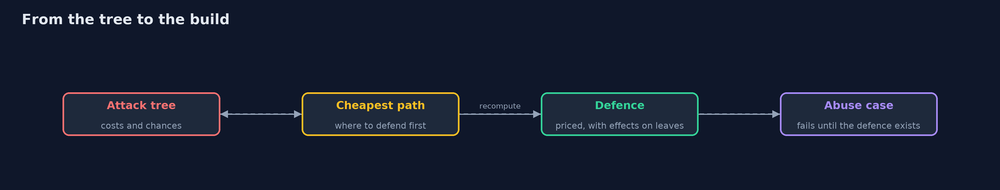
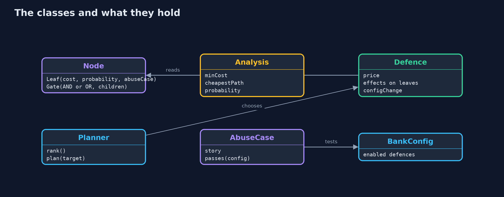
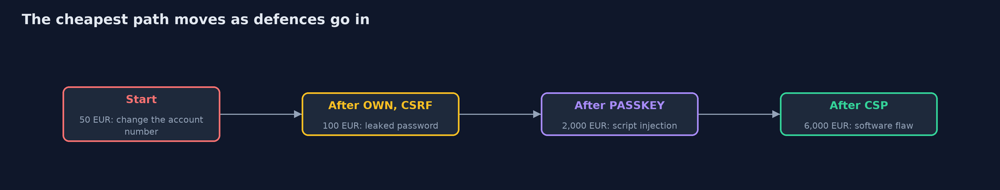
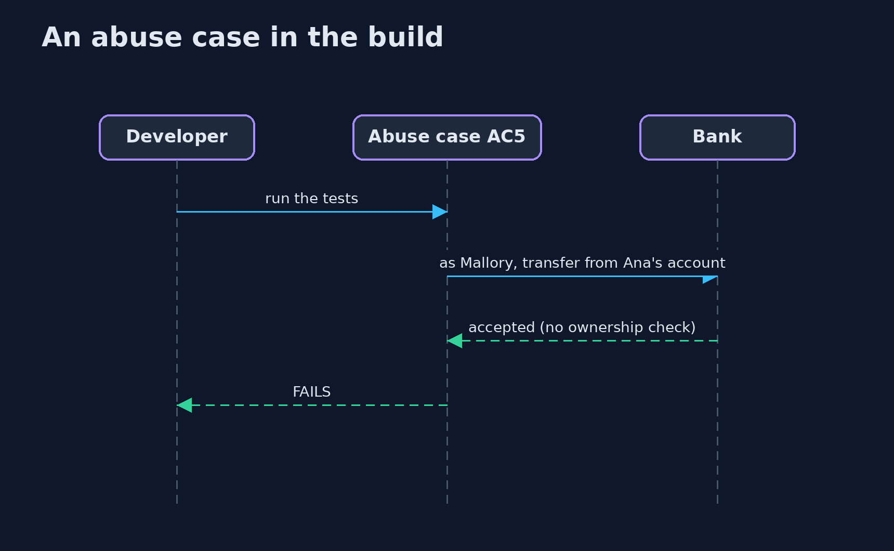

Attack Trees and Abuse Cases
src/main/java/com/jk/explore/security/attacktree/
├── AbuseCase.java "As an attacker I want to ..., so that ...": an abuse case written as a check against the bank system
├── Analysis.java What a tree says about an attacker: the cheapest way to reach the goal (its cost and its steps), and the chance that some way succeeds
├── AttackTreeDemo.java Runs the attack tree story in five numbered acts and prints exact, repeatable results
├── BankConfig.java The properties of the bank system that the abuse cases test
├── BankTree.java The attack tree for "move money out of Ana's account" at the online bank, as it is before any of the defences below
├── Defence.java A defence the bank could buy: what it costs, and what it does to the leaves of the tree (a factor for the attacker's cost and one for the chance of success; a probability factor of 0 removes the step)
├── Node.java A node of an attack tree: either a leaf (one step an attacker takes) or a gate (OR: any child will do; AND: every child is needed)
└── Planner.java Chooses defences by what they do to the tree: at each step, the one that most raises the cheapest attack
An attack tree lays out every way an attacker can reach one goal, with a cost and a chance on each step; it shows which defence cuts the cheapest path, why one defence is never enough, and, with abuse cases written as failing tests, turns each step into something the build can check.
A threat model lists what can go wrong. An attack tree answers a sharper question: by which ways can an attacker reach this one goal, and which is the cheapest? The goal is the root ("move money out of Ana's account"). Below it are the ways in. An OR gate means any child is enough; an AND gate means every child is needed. The leaves are single steps, each with a cost to the attacker and a chance that it works against the system as it is.
From those numbers the tree computes two things: the cheapest path (costs add along AND, the cheapest wins at OR) and the chance that some path succeeds (probabilities multiply along AND and combine at OR). In this bank's tree the cheapest path costs 50 EUR: change the account number in the transfer request. That is a missing ownership check, and no password policy or one-time code would have mattered.
The project then does the thing that makes trees useful in practice: - Price the defences (ownership check, CSRF tokens, breached-password check, app-based one-time codes, passkeys, a strict content security policy, fast patching, dual control) and see what each one does to the tree on its own: no single one fixes it. - Cut the cheapest path, then look again. After the ownership check, the cheapest path moves to leaked-password reuse and CSRF at 100 EUR; after passkeys, to a script injection at 2,000 EUR; after a content security policy, to a software flaw at 6,000 EUR. Each round shows the next weakest door. - Write abuse cases as tests. "As Mallory I transfer from Ana's account by changing the account number" is a check that fails on the weak bank and passes when the ownership check exists. Eight abuse cases cover thirteen of the tree's fourteen steps.
Maps to: OWASP Top 10 (2025) A06 Insecure Design · OWASP ASVS 5.0, V1 architecture and design requirements · Bruce Schneier, Attack Trees (1999) · NIST SSDF PW.1 (design software to meet security requirements) · OWASP Threat Modeling.
The idea in everyday terms
A burglar's map of a house, drawn from their side: the front door (a strong lock), the back window (latched with a butter knife), the garage (open), the neighbour with a spare key. The cheapest way in is not the front door. Fixing the window moves the cheapest way to the garage; the map is only done when the cheapest way is expensive.
The scenario
The online bank, one goal and fourteen attacker steps, eight defences with prices, and eight abuse cases that run against a model of the bank's configuration. All numbers are teaching estimates, chosen so that the lesson is visible; a real tree uses the team's own estimates and argues about them.
Run
./gradlew run
The demo tells the story in 5 acts, each printing exact numbers that the tests check:
| Act | What it shows |
|---|---|
| 1. The tree | One goal, 14 attacker steps in four branches: log in as Ana, abuse the transfer call, bribe an employee, or break in through the software. |
| 2. What the tree says about the attacker | The cheapest way in costs 50 EUR (change the account number), and the chance that some way works is 97%. |
| 3. Each defence on its own | The ownership check raises the cheapest path from 50 to 100 EUR for 2,000 EUR; no other defence alone moves it, and the passkey, the most expensive, leaves it at 50. |
| 4. A plan: always cut the cheapest path, then look again | Ownership check (2,000 EUR) → 100 EUR; CSRF tokens (5,000 EUR in all) → still 100 EUR via the leaked-password path; passkeys (45,000 EUR) → 2,000 EUR via a script injection; a strict CSP (55,000 EUR) → 6,000 EUR via the software. |
| 5. Abuse cases as tests | All 8 abuse cases fail on the bank as it is; after the plan 2 still fail (the insider and the unpatched library); 13 of the tree's 14 steps have an executable abuse case. |
Test
./gradlew test
13 tests in AttackTreeTest, DemoRunsTest. Everything is fixed data, so the demo prints the same text on every run.
What the simulation got right, and what it left out
The tree is a small Java data structure; the analysis is exact arithmetic over it. The abuse cases run against a model of the bank's configuration (a set of switched-on defences), not against a running bank: each is a predicate that is false until the defence exists. That is enough to show the loop between the tree, the defence and the test.
Technologies and versions
Every version below is pinned in the project's build files and was the latest stable release when the project was built.
| Technology | Version | Used for |
|---|---|---|
| Java | 25 | the language and runtime; a Gradle toolchain finds or downloads the JDK |
| Gradle | 9.8.1 (wrapper) | build and run; nothing to install, the wrapper downloads it |
| org.junit.jupiter:junit-jupiter | 6.1.3, set by junit-bom | JUnit 5: the tests (tests only) |
| org.junit.platform:junit-platform-launcher | 6.1.3, set by junit-bom | JUnit platform launcher, which Gradle needs to run the tests (tests only) |
Learning Material
| Document | What it is for |
|---|---|
| Problem statement | the situation and what the project must show |
| Prerequisites | what you need to know first |
| Attack Trees and Abuse Cases, explained | the acts in prose |
| Session guide | a one-hour lesson with exercises |
| Animated walkthrough | the acts step by step |
| Threat model | what is protected, who could harm it, and how, using STRIDE |
| Spec | what this project must be true of |
| Expected output | the golden demo output every test and every port checks against |
The idea in one picture
The tree finds the weak point, the plan buys a defence, the abuse case proves it, and then the tree is recomputed.

Where each piece sits
A tree is leaves and gates; an analysis reads it; a defence rewrites its leaves.

How the data moves
Each round exposes the next weakest door.

Who calls whom, in order

What it costs
- The numbers are guesses, and a tree is only as good as the argument about them. Their value is that they make the argument explicit; check them against incidents and red-team results.
- Independence is assumed. The same weakness (a reused password) can feed several branches, which a tree with shared leaves would show; the probabilities here are a first approximation.
- Trees grow fast. Keep one tree per goal and prune branches that no attacker in your threat model would take.
- Greedy plans are not optimal. Choosing the defence that most raises the cheapest path is easy to explain; with budgets and overlaps a search can find a cheaper set.
- Abuse cases test the design, not the attacker. A passing abuse case shows that this abuse is refused, not that no abuse exists.
When this is too much
For a small system a checklist and a conversation are enough; reach for a tree when the goal is valuable, the paths are many and you need to decide where to spend. Do not draw trees for goals nobody would attack.
Where you have already met this
- Attack trees in threat modeling books and in the automotive and safety-critical industries.
- Misuse cases and evil user stories in agile security practice.
- "As an attacker I want to..." stories in a backlog.
- OWASP SAMM threat assessment and the STRIDE method.
Where this sits
This project is in secure-design and follows threat-modeling (what can go wrong) and security-requirements-with-asvs (what the system must do about it). Its steps point at projects in this track: access control, CSRF, passkeys, XSS, dependency updates.